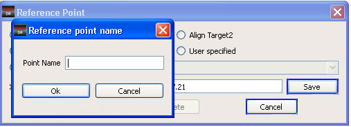
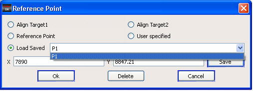

You can save
reference points for translation and reload them at a later time.
Procedure
Perform one of the following
operations:Saving a Reference Point by Name:
- Click Save on the Reference Point
dialog box. A Reference Point Name dialog box appears.
- Enter a name for the current
point in the Point Name text box.
Figure 1. Saving a Reference
Point Name
- Click Ok.
Loading a Reference Point:
- In the Reference Point dialog
box, click the Load Saved radio
button.
- Select a point name from the
drop down menu beside the Load Saved option.
Figure 2. List of Named Reference Points
- Click Ok.